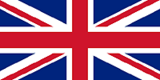
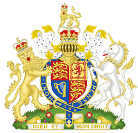
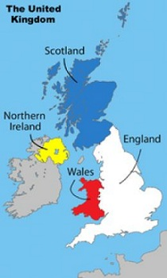

|  | The United Kingdom of Great Britain and Northern Ireland |
 |
|---|---|---|
| Main page | ||
|
The United Kingdom of Great Britain and Northern Ireland, commonly known as the United Kingdom and Britain, is a sovereign state located off the north-western coast of continental Europe. The country includes the island of Great Britain, the north-eastern part of the island of Ireland, and many smaller islands. Northern Ireland is the only part of the UK that shares a land border with another state—the Republic of Ireland. Apart from this land border, the UK is surrounded by the Atlantic Ocean in the west and north, the North Sea in the east, the English Channel in the south and the Irish Sea in the west.
The form of government is a constitutional monarchy with a parliamentary system. The capital city is London. The UK consists of four constituent countries: England, Scotland, Wales and Northern Ireland. The latter three have devolved administrations, each with varying powers, based in their capital cities, Edinburgh, Cardiff and Belfast respectively. Associated with the UK, but not constitutionally part of it, are the three Crown dependencies: Guernsey, Jersey and the Isle of Man. The United Kingdom has fourteen British Overseas Territories. These are remnants of the British Empire which, at its height in the late 19th and early 20th centuries, encompassed almost a quarter of the world's land surface and was the largest empire in history. British influence can still be observed in the prevalence of language, culture and legal systems in many of its former colonies.
The UK is a developed country and has the world's seventh-largest economy by nominal GDP and eighth-largest economy by purchasing power parity. It was the world's first industrialized country and the world's foremost power during the 19th and early 20th centuries. The UK is still referred to as a great power and retains considerable economic, cultural, military, scientific and political influence internationally. It is a recognized nuclear weapons state and its military expenditure ranks fourth in the world.
The UK has been a permanent member of the United Nations Security Council since its first session in 1946. It has been a member of the European Union and its predecessor the European Economic Community since 1973. It is also a member of the Commonwealth of Nations, the Council of Europe, the G7, the G8, the G20, NATO, the Organization for Economic Co-operation and Development (OECD) and the World Trade Organization.
| |
| Web-designer ksiushka1997@mail.ru © 2013 | ||